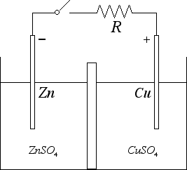

Corrente elettrica
Corrente nei liquidi
In questa sezione analizzeremo brevemente alcuni aspetti della corrente nei liquidi e nei gas. Cominciamo con il porci la seguente domanda: perché il sale in acqua si scioglie? La ragione fisica sta nel fatto che la forza elettrostatica tra gli ioni che compongono il sale è minore in acqua. Abbiamo infatti visto che la costante dielettrica relativa dell'acqua è εr = 80. Come conseguenza, la forza elettrostatica nell'acqua è 80 volte minore rispetto alla forza elettrostatica nell'aria. Tale forza non riesce perciò a tenere assieme il cristallo.
Mentre l'acqua distillata non conduce la corrente elettrica, l'acqua salata è un buon conduttore. Consideriamo ad esempio del cloruro di stagno (Cl2Sn) disciolto in acqua e inseriamo nell'acqua un elettrodo positivo (detto anodo) e un elettrodo negativo (detto catodo). Allora gli ioni stagno Sn++ tendono a dirigersi verso il catodo mentre gli ioni negativi Cl- tendono a dirigersi verso l'anodo. Ai due elettrodi avverranno pertanto le seguenti reazioni: 2 Cl- → Cl2 + 2 e- è la reazione che avviene all'anodo, mentre invece Sn++ + 2 e- → Sn è la reazione che avviene al catodo. Agli elettrodi si deposita dunque del cloro e dello stagno.
Le reazioni chimiche che avvengono agli elettrodi sono regolate dalle cosiddette leggi di Faraday. La prima legge di Faraday afferma che la massa m di sostanza che si sviluppa agli elettrodi è proporzionale alla quantità di carica Q che passa nella cella: m = k · Q. La costante k prende il nome di equivalente elettrochimico. Per enunciare la seconda legge di Faraday dobbiamo invece introdurre il concetto di equivalente chimico. L'equivalente chimico è il rapporto tra la massa molare e la valenza. La seconda legge di Faraday afferma che le masse che si depositano agli elettrodi sono direttamente proporzionali agli equivalenti chimici.
Questi fenomeni fisici hanno molte applicazioni pratiche, soprattutto a livello di galvanotecnica (zincatura, ramatura, nichelatura).
Sul processo opposto si basa invece il funzionamento della pila Daniell illustrata in figura:

Un elettrodo di zinco è immerso in una soluzione di solfato di zinco, mentre un elettrodo di rame è immerso in una soluzione di solfato di rame. Quando il circuito è aperto avvengono le seguenti reazioni agli elettrodi: Zn → Zn++ + 2 e- e Cu++ + 2 e- → Cu. Come conseguenza, l'elettrodo di rame si carica positivamente mentre l'elettrodo di zinco si carica negativamente. Tra i due elettrodi si crea una differenza di potenziale che può essere utilizzata per far circolare corrente nel circuito. Su fenomeni fisici simili si basa la pila a secco in cui l'elettrodo di rame è sostituito da un elettrodo di grafite (carbone) oppure la cella a combustibile in cui una membrana elettrolitica fa passare i protoni che si vengono a formare dalla catalizzazione dell'idrogeno H2 mentre gli elettroni, bloccati dalla membrana, vanno a generare una corrente lungo il filo esterno. All'elettrodo positivo gli elettroni si ricombinano con i protoni e formano, assieme all'ossigeno dell'aria, vapore acqueo. Sulle celle a combustibile si basano i motori ad idrogeno.